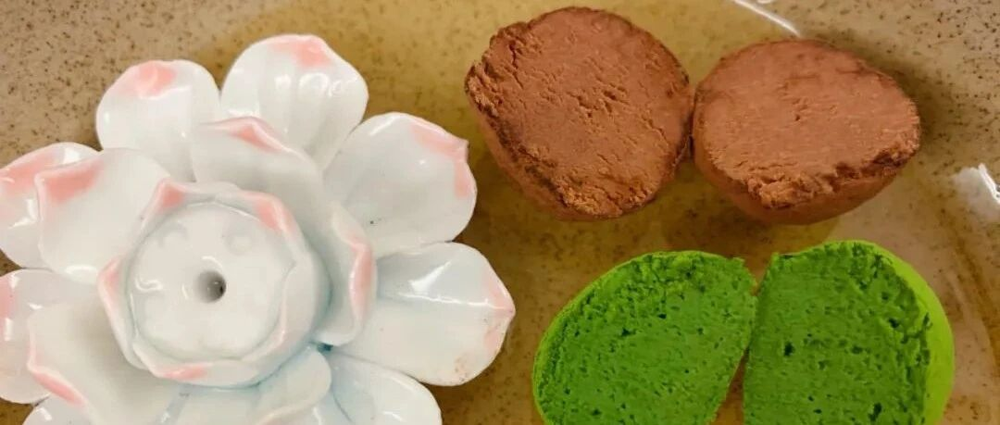

新年里的情人节 - 空气巧克力
作为一个有素质的专业烘焙博主，这么重大的节日怎么能错过呢？【圣诞节花环面包的方子，我们晚点哈，反正离圣诞节还很远呢，嘻嘻】
讲真，情人节一年过那么两次半【2.14+七夕+3.14】也是让人觉得创意缺缺。我看了看以前的方子，也没什么特别讲究的地方。如下：
和你一起享受爱情的苹果玫瑰卷
愿你终身美丽！- 软糖布朗尼
可以忘记一切烦恼的布朗尼
我今年把巧克力蛋糕和布朗尼也放了进来，其实情人节呢，还是讲究个心意吧。只要爱你，每天都是情人节；如果不爱你，你再怎么期待，其实也是骗自己。【有点双押那味儿了】
空气巧克力算是几年前的网红了，今年想起来翻出来做做。
说的高大上一点就是：在巧克力和淡奶油混合物中搅打入空气。
说人话就是五个字儿：打发甘纳许。。。
恩，方子先来。

别看这么多字，总结一句话，所有原料微微加热，混合在一起！！！
很多方子写什么小火加热到锅边出现小气泡什么的，别信。你什么时候要做翻倍量的时候，再这么搞也来得及。如果不翻倍做，就真的只要微波炉稍微热热就行了。
唯一要说的就是，放巧克力的容器要稍微大一点，且可以放进冰箱，方便后期的搅打和冷藏【都是经验教训啊！同学们！】
以下是详细的技术总结（美食家王刚上身）：
这是融化的巧克力，如果不怕麻烦可以隔水融化，我一般就微波炉20秒叮一下，看看状态，继续20秒这样，一直到融化。

这是盖了保鲜膜的甘纳许，注意是要贴面盖保鲜膜的。

冷藏过后，不沾保鲜膜哦。

施展你的大臂，使劲搅打100圈！！！

这是抹茶版的。一样。一定要用好的抹茶粉！我用的宇治五十铃。

冷藏过后，不沾保鲜膜。

也是要搅打100圈哦！【我实在打不动了，就用了电动打蛋器，嘤嘤嘤，小心别打过了。】

挤出来一坨坨。。。这种样子，比较好揉圆哦。
既然你看到这里了，我就给你一个非常非常好用揉圆的Tips【心机婆婆】
---- 带上手套，把冷藏好的小坨坨，沾上一点点可可粉/抹茶粉，再揉圆，然后丢到粉里面滚一圈就可以啦。

最后用筛网把多余的粉筛掉。我自己感觉，冰箱拿出来回温一会，更好吃。
还有要说明一下，唉，婆婆就是这么啰啰嗦嗦：冷藏过后，抹茶味道的巧克力外部的粉会浸入到内部，看上去就不是那么粉粉的，如果第二天要送人的话，最好早上再筛一点点粉哦。
我其实对抹茶一般般，但是抹茶味的好好吃！

用棉线切开！！棒棒哒！！

水星婆婆祝各位有情人终成眷属！